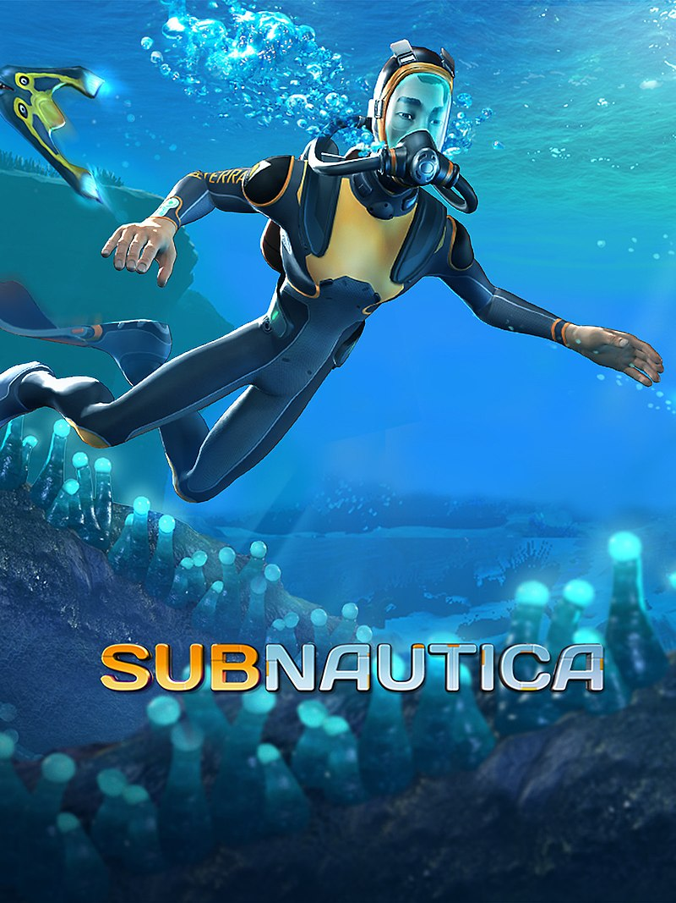
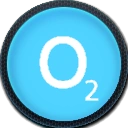

Информация об игре
Игра начинается в 22-ом веке, когда человечество начало колонизировать космос. Во время колонизации различные космические суда направлялись на неосвоенные планеты, и каждый корабль шел со своей особой миссией. Одно судно, Аврора, было направлено для постройки фазовых врат, сложного устройства для перемещения в пространстве. Также у Авроры была вторая миссия — найти выживших с шахтерского корабля "Дегази", который пропал 10 лет назад.
Тем не менее во время маневров возле океанической планеты 4546B, по Авроре ударил мощный энергетический луч неизвестной природы, сильно повредив корпус корабля, в результате чего судно потерпело крушение. Во время падения от Авроры отделились спасательные капсулы. В одной из этих спасательных капсул (а точнее, в пятой) и находится игрок (Райли Робинсон). Во время приводнения капсулы на поверхность океана, панель, оторвавшись от стенки ударяет игрока по голове, и он теряет сознание на три часа.
Персонажи
В данной игре, присутствует только главный герой, потому что все остальные скончались по неведомым причинам
Райли Робинсон
Шеф по обслуживанию второстепенных систем До крушения корабля работал на специальности обслуживания второстепенных систем на космическом корабле «Аврора», производя проверку работоспособности техники. Во время подбития корабля Системой ПВО Предтечей, незамедлительно отправился в отсек спасательных капсул и запустился в спасательной капсуле № 5, попавшей в Безопасные отмели.
Интересные механики и тактики
Кислород и давление
в игре есть показатели кислорода и давления
Глубина
на высоких глубинах транспорт который не выдерживает такое давление ломаеться
Жизненные показатели
в игре так же есть показатели голода и жажды
Полезные навыки развиваемые в игре.
- Внимательность: в игре нужно каждую секунду следить за показателями еды и воды, кислородом и давлением, любая невнимательность может закончиться смертью главного герояф
- аккуратность: в мире Сабнаутики много враждебных существ и монстров, нужно всегда прислушиваться к окружению и звукам в воде, ведь существа и монстры могут напасть в любой момент
- экономия: если видишь что тебе хватает ресурсов впритык, лучше перестраховаться и добыть ещё, на крайний случай.